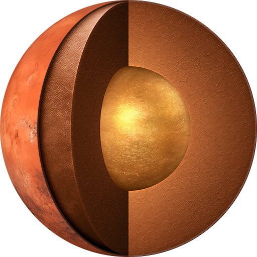

Mars is the fourth planet from the Sun and the second smallest planet in the Solar System. The reddish appearance of Mars’ surface is caused by iron oxide (rust).
Earth-like
While the Mars is about half as big as the Earth, there are still many similarities: Mars has a rocky surface and polar ice caps, the days on Mars are only 40 minutes longer, the axial tilt gives it similar seasons to ours (although each lasts about twice as long)
Surface
Mars has a dramatic landscape, with towering volcanoes and a great canyon system. Of all the planets in the Solar System, it has the highest mountain, Olympus Mons, and the largest canyon, Valles Marineris.
Water
There is strong evidence that the Martian atmosphere was once far denser than it is now, and that water once ran freely on its surface. There is also mounting evidence that much of this water remains locked away underground.
Moons
Mars has two small natural satellites, Phobos and Deimos, that orbit very close to the planet. These moons may be captured asteroids. It has been predicted that in about 50 million years, Phobos will either crash into Mars’ surface or break up into a ring structure around the planet.
Missions
Mars is the focus of intense study, with two rovers (exploration rover Opportunity and science laboratory Curiosity) operating on the surface, while three international missions orbit the planet: NASA’s Mars Odyssey and Mars Reconnaissance Orbiter and ESAs Mars Express.
Observation
Mars can easily be seen from Earth with the naked eye, as can its reddish coloring. Its apparent magnitude is surpassed by the Sun, the Moon, Venus and Jupiter - but it can briefly match Jupiter’s brightness at certain points in its orbit.
Structure
| Layer | Composition |
|---|---|
| Crust | Iron-rich basaltic rock |
| Mantle | Solid silicate rock |
| Core | Partially liquid iron, nickel and sulphur |
Crust
The outer crust is rich in silicon, oxygen, iron, magnesium, aluminum, calcium, and potassium all of which could be used in the development of future human outposts on Mars.
Mantle
Silicate mantle was once very active, giving rise to many of the planet's distinctive surface features, but which now appears to be dormant.
Core
Like Earth, Mars has undergone differentiation, resulting in a dense core primarily comprising iron and nickel, but with around 17% sulfur, which renders the core partially liquid.
{kind=link}
{kind=link}
{kind=link}
{kind=link}
{kind=link}
{kind=link}
{kind=link}
{kind=link}
{kind=link}
{kind=link}